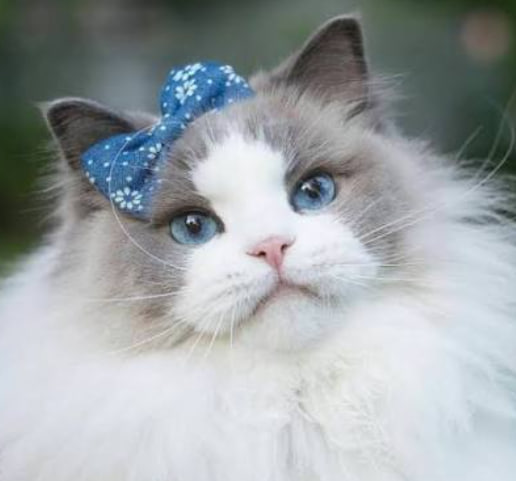

Привіт! Мене звати Вова
Я люблю тварин, особливо собак і котів. Вони дарують гарний настрій, радість та позитивні емоції. На цій сторінці я хочу розповісти про своїх улюбленців.
Мій собака — Бадді

Бадді — мій веселий та активний собака. Він любить прогулянки, ігри та увагу. Бадді дуже дружній, розумний і відданий.
Моя кішка — Луна

Луна — спокійна та ласкава кішка. Вона любить відпочивати, гратися з іграшками та проводити час поруч зі мною.
Мої інтереси
- Тварини та догляд за ними
- Комп'ютери та технології
- Подорожі
- Прогулянки на свіжому повітрі